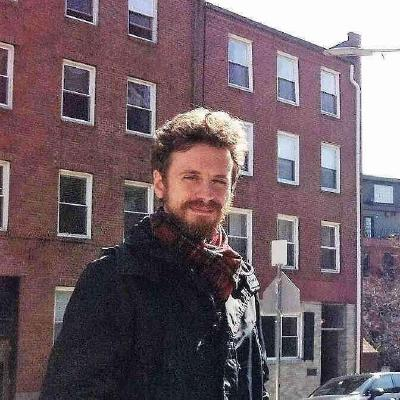

I’m a postdoctoral fellow at the Department of Philosophy of Universität Zürich
My primary areas of research are the philosophy of language and natural language semantics. Most of my current work is on nature of meaning and semantic properties, topics I think about in connection with related issues in metaphysics, philosophy of mind, and cognitive science. Parallel to this, I have interests, and have published work, in the history of philosophy, Eastern philosophy, and classical studies.
I did a PhD in philosophy and cognitive science under Andrea Moro at Università San Raffaele & NeTS, IUSS Pavia, and a PhD in philosophy and social science under François Recanati at the Institut Jean Nicod & EHESS. Before that, I got a BA in ancient philosophy and an MA in the history of philosophy, both from Università San Raffaele. Along the way, I’ve been a visiting student at MIT’s Department of Linguistics and Philosophy, a visiting fellow at Harvard University’s GSAS, and a Fernand Braudel fellow at the Fondation Maison des Sciences de l’Homme.
Before coming to UZH, I’ve been an associate postdoc at the Institut Jean Nicod, an Alexander von Humboldt fellow at the Institut für Philosophie of Freie Universität Berlin, and a fellow of the Center for Advanced Studies in the Humanities Human Abilities in Berlin. In Zürich, I’m part of the SNSF research consortium (NCCR) Evolving Language.